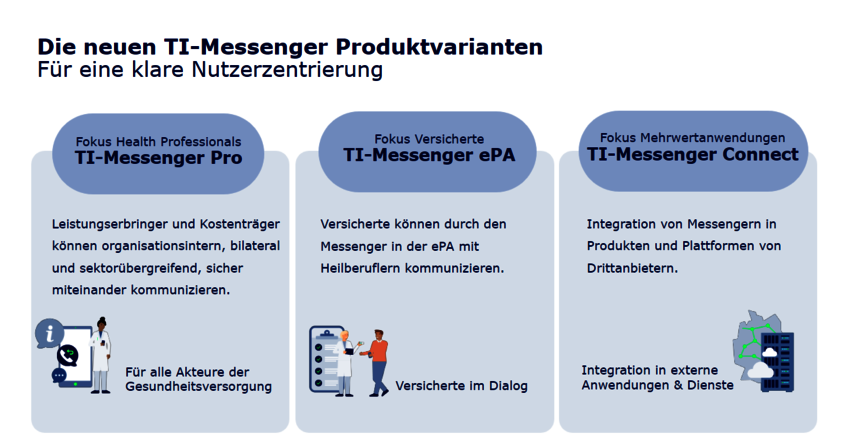

TI-Gateway FINALE - PLATZHALTER-SEITE
TIM steht für den TI-Messenger und ist der sichere Messenger-Dienst für das Gesundheitswesen in Deutschland. TIM ermöglicht es Ärzt:innen, Apotheken, Krankenhäusern und anderen Teilnehmer:innen der Telematikinfrastruktur (TI), schnell und unkompliziert Nachrichten, Dokumente oder Bilder auszutauschen – und das alles Ende-zu-Ende verschlüsselt und datenschutzkonform.

Funktionen und Vorteile von TIM
TIM bietet viele praktische Funktionen, die den Arbeitsalltag erleichtern: Gruppen-Chats für Teams, Versand von Bildern und Dokumenten, sowie die Möglichkeit, direkt mit Kolleg:innen oder Patient:innen zu kommunizieren. Alle Teilnehmer werden eindeutig über die TI identifiziert, sodass keine unbefugten Personen Zugriff haben.
- Ende-zu-Ende-Verschlüsselung für maximale Sicherheit.
- Gruppen- und Einzelchats für flexible Kommunikation.
- Integration in bestehende Praxis- und Krankenhaussoftware.
- Datenschutz und Vertraulichkeit sind jederzeit gewährleistet.
Mit TIM wird die Kommunikation im Gesundheitswesen nicht nur sicherer, sondern auch deutlich effizienter.
Weitere Informationen und technische Details findest du im Fachportal der gematik.
Was ist der Verzeichnisdienst?
Der Verzeichnisdienst (VZD) ist das sichere Adressbuch für die Telematikinfrastruktur (TI). Über den VZD finden Sie schnell und einfach die Kontaktdaten anderer medizinischer Einrichtungen.
TI-Messenger Zukunft
TI-M Pro
Einfache, sektorenübergreifende Ad-hoc-Kommunikation zwischen den Heilberufen
TI-M ePA
Kommunikation zwischen Heilberufen und Versicherten sowie Austausch zwischen Versicherten und Kassen
TI-M Connect
Austausch per Videochat und Videosprechstunden.